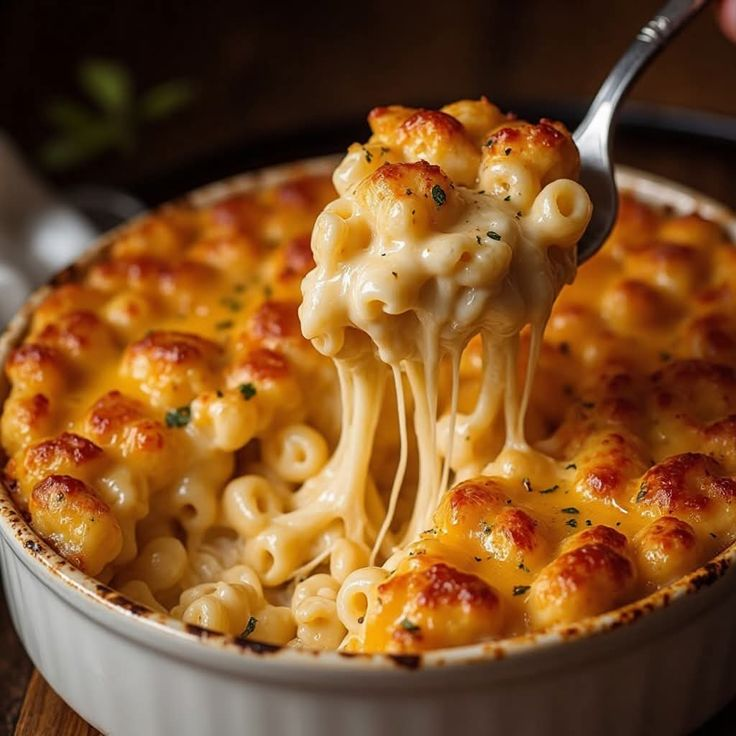

Çocuklara Özel

Mini Margherita Pizza
Dana incik, sebzeli risotto ve aromatik gremolata ile servis edilir.
₺500
Mozzarellalı Fırın Portobello
Fırınlanmış portobello mantarı, eriyen mozzarella, konfit cherry domates ve taze otlar eşliğinde; zeytinyağı ve hafif jus ile tamamlanan Akdeniz esintili rafine bir lezzet.
₺750
Spaghetti Pomodoro
Al dente spagetti, hafif domates sos ve rendelenmiş parmesan ile.
₺550
Mini Köfte
İçerisine havuç ve kabak rendesi eklenmiş mini köfte, hafif sosla.
₺680

Mac & Cheese İtalyan Usulü
Kremamsı peynir soslu mini makarna, hafif parmesan dokunuşuyla.
₺590
Patates ve Sebze Fritters
Rendelenmiş patates ve mevsim sebzelerinden hazırlanan minik fritterslar, hafifçe fırınlanmış veya kızartılmış; yanına yoğurtlu dip sos ile servis edilir.
₺720Kurabiye
Sude şefin spesiyali kurabiyeleri .
₺220